Service Deptartment
Every Prime service technician is a fully trained professional.
- 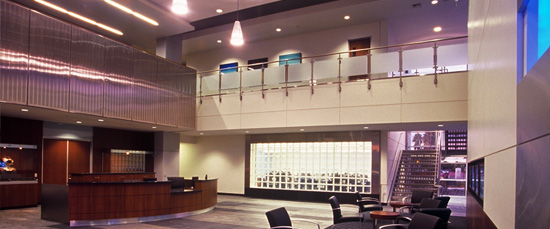
- 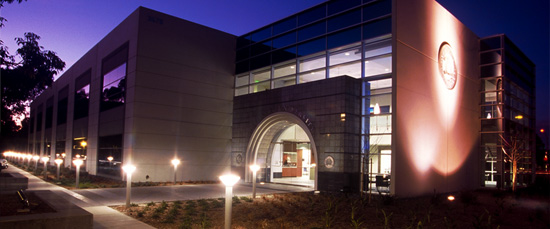

- 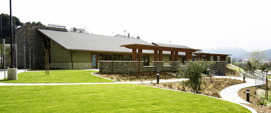
- 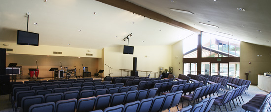
- 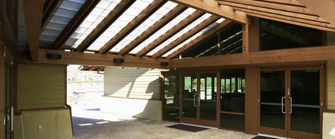
- 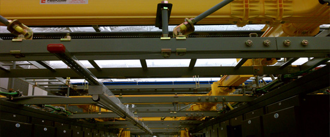
- 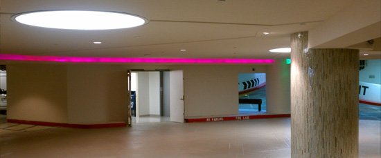
- 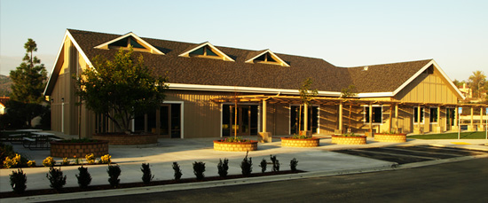
- 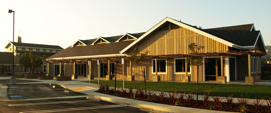
- 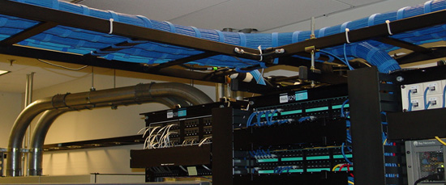
- 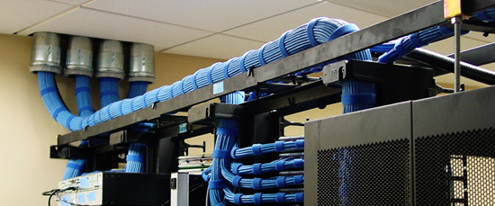
Prime's Service Department has a fleet of fully stocked trucks to handle almost any service call that may arise. Every Prime service technician is a fully trained professional that can help solve the most challenging of electrical issues in a timely fashion.
If electrical service or a quote is needed please contact:
|
Greg Wright (760) 471-6634 ext: 21 gwright@primeelectrical.net |
Rob Brashear (760) 471-6634 ext: 13 rbrashear@primeelectrical.net |
Van Powers (760) 471-6634 ext: 12 vpowers@primeelectrical.net |
Industries Served:
· Manufacturing
· Industrial
· Commercial
· Utilities
Services Offered:
· Tenant Improvements
· Energy Management
· Lighting and Controls
· Equipment and Controls
· Generators and UPS Installations
· Grounding and Bonding
· Data Logger/Analyze existing power consumption